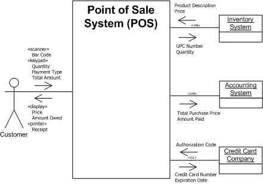

OUM |
Task Overview |
||
Method Navigation |
Current Page Navigation |
||
|
|
||||||||
The purpose of this task is to produce the System Context Diagram. This model is used to illustrate the Vision and explain concepts to the wider world. It also provides a baseline view of scope.
In a commercial off-the-shelf (COTS) application implementation, any variance between the business requirements identified in the execution of this task and the capability or features of the proposed application system that are necessary to meet that requirement (that is, gaps) should be captured in the System Context Diagram by annotation and additional textual reference, if necessary. Gaps identified in this manner should also be entered into the MoSCoW List (RD.045) and used as input into subsequent tasks [for example, Develop Future Process Model (RD.011.1 and RD.011.2), etc.] for further refinements.
The System Context Diagram is used to show a high-level view of the system and its external interfaces (human and non-human). It is generally drawn after the Level 1 (business area) Business Process Model is created and is refined to provide more detail regarding how the system within the business area will satisfy the business user’s need for information. It is a graphical representation depicting the boundary of the system and its association with external entities called actors. An actor can be one of 4 types (i.e., human, another system, a clock representing a time-based event, or a hardware device). These actors have the ability of sending or receiving information and/or events into or out of the system. The key information represented on the association line between the actor and the system is at a summary-level and shows an arrow indicating the direction of the information flow.

A.ACT.GBRI Gather Business Requirements - Inception
System Context Diagram
The work product is a high-level view of the system and its external interfaces (human and non-human).
You should follow these steps:
No. |
Task Step | Component | Component Description |
|---|---|---|---|
1 |
Determine the boundary of the system that you would like to represent and draw a box with the name of that system inside. | Bounding Box | This box represents the boundaries of the system you are interested in modeling. |
2 |
Identify the actors (people, organizations, or other systems) which have a direct relationship (or interaction) with the system from step #1 and label each actor with an appropriate role name (that is, customer, night manager, etc.). | Actors | The actor symbol is drawn as a “stick figure” for humans or organizations, a box for other systems or hardware devices, and a clock for time-based events. If available, reference the Enterprise Business Context Diagram ENV.BA.045) to bring in the business actors from that diagram who will be actors in the new system. |
3 |
Identify key inputs and outputs from each actor’s point-of-view. Place this key information on the line between the actor and the bounding box and label it with an arrow indicating the direction of the information flow. | Key Information with Directional Arrows | The lines with arrows indicate the direction that the key information flows. The words on the line should be “nouns,” indicating data (not process). |
4 |
Review available documentation and talk with subject matter experts (SMEs) to ensure all Actors have been identified. | Update the diagram for completeness. | |
5 |
Write a brief description describing the role and responsibility of each actor. | Stakeholder Description | This description helps to define the daily activities being performed by that actor as they are related to the business or organization. |
6 |
Identify the expectations of each actor regarding their future needs from the business and/or organization. | Stakeholder Expectations | This should be a bulleted list of high level goals or objectives that each actor would expect to achieve from the business/organization in the future (that is, Reduce Procure to Pay cycle from 14 to 7 days). |
The System Context Diagram represents a strategic view of the system. The diagram should not depict how technology will be used by the business, but instead it shows the people, organizations, and key information that allow the system to operate (from an internal point of view). One technique that is used for accurately depicting the system is to hold a facilitated session with senior-level members of the team or a subject matter expert who knows about the business. Here are the steps you should use for this brainstorming session:
The UML optionally allows you to indicate system actors with a rectangle and the <<actor>> stereotype. It is just another way of saying it is an actor, but some people prefer to differentiate between human actors and actors that represent computer systems.
Creating the System Context Diagram can be accomplished in several different ways. Depending on the size of the solution being developed, you can use interviews, meetings, workshops, as well as a combination of these methods or a series of meetings and workshops. This task may be one of many tasks being addressed in a meeting or workshop that is being held to gather business requirements.
For custom-developed systems, OUM recommends performing this task by gathering all the required participants in a working session. Preferably, use a facilitated workshop, but in smaller projects, it may be sufficient to do this in a meeting. Either way, it is essential that all of the relevant stakeholders and ambassador users participate. Do not include anyone who has little or nothing to contribute to the workshop. The results of this workshop define the scope of the project. Subsequently, the project manager will only accept requirements if they can be traced to objectives defined in this workshop. Use techniques that encourage user participation.
When the need for a new system is determined, the first task is to define the business area that the new system will automate. In order to do this, we need to understand the customer's business objectives and primary business processes. We also need some way of understanding the size and complexity of the business area. We can accomplish this by answering the following questions:
The System Context Diagram considers these issues by looking at how the system supports a business area and its relationship to the environment.The term business area is used to refer to the set of business organizations involved in the scope of a project. This high-level or contextual perspective provides a unique view of the system. It defines the scope by specifying what is inside the system and what is outside the system. Although the project sponsor drives the definition of scope, we use the System Context Diagram to expose and clarify what is in scope.
This task has supplemental guidance that should be considered if you are executing a service based on the BPM Project Engineering view. Use the following to access the task-specific supplemental guidance. To access all BPM Project Engineering supplemental information, use the BPM Project Engineering Supplemental Guide.
This task has supplemental guidance that should be considered if you are doing a Siebel CRM implementation. Use the following to access the task-specific supplemental guidance. To access all Siebel CRM supplemental information, use the OUM Siebel CRM Supplemental Guide.
This task has supplemental guidance that should be considered if you are doing a Webcenter implementation. Use the following to access the task-specific supplemental guidance. To access all WebCenter supplemental information, use the OUM WebCenter Supplemental Guide.
This task involves the following method roles:
Role |
Responsibility |
% |
|---|---|---|
Business Analyst |
Facilitate the workshop, interviews or meetings. Lead the modeling activity. Record/document the model. If a Business Requirements (or other) team leader has been designated, 20% of this time would be allocated to this individual, leaving 80% allocated to the business analyst. The team leader would then facilitate the w orkshop, interviews or meetings. |
100 |
Ambassador User |
Provide information about business processes, organization units and external interfaces. Participate in modeling. | * |
* Participation level not estimated.
You need the following for this task:
Prerequisite |
Usage |
|---|---|
Enterprise Process Model (ENV.BA.040) |
Use this Envision work product or a similar enterprise-level document, if available. You need this information before you can begin this task. Therefore, if it is not available, you should obtain this information prior to beginning this task. |
Enterprise Business Context Diagram (ENV.BA.045) |
Use this Envision work product as a starting point, if available. If this task was not done, you need to draw the Enterprise Business Context Diagram in context of your implementation project (not the full Enterprise, just those business areas impacted by the system implementation), as a first step of this task. |
Business and System Objectives (RD.001) |
The Business and System Objectives are used as to help determine the context of the system. |
The following techniques are available to assist with this task:
Technique |
Comments |
|---|---|
The Workshop Techniques Handbook provides detailed descriptions of various techniques for delivering workshops during customer projects. |
|
MS WORD - This file contains several sample workshop checklists that can be tailored for delivering workshops during customer projects. |
|
MS WORD - This file contains a sample workshop plan/agenda. |
The following templates and tools are available to assist with this task:
Template File Name |
Comments |
|---|---|
| MS POWERPOINT - Use this template if you choose to create the System Context Diagram in MS PowerPoint. | |
| This zipped file contains an MS VISIO template and stencil to assist you in creating a System Context Diagram in MS VISIO. |
Tool |
Comments |
|---|---|
Getting Started with Activity Modeling (regarding the Context Process Diagram) |
|
| JDeveloper | |
Activity Diagram Viewlet (regarding the Context Process Diagram) |
JDeveloper |
Example |
Comments |
|---|---|
| MS Visio |
The System Context Diagram is used in the following ways:
Distribute the System Context Diagram as follows:
Use the following criteria to check the quality of this work product:

Copyright © 2006, 2016, Oracle and/or its affiliates. All rights reserved.